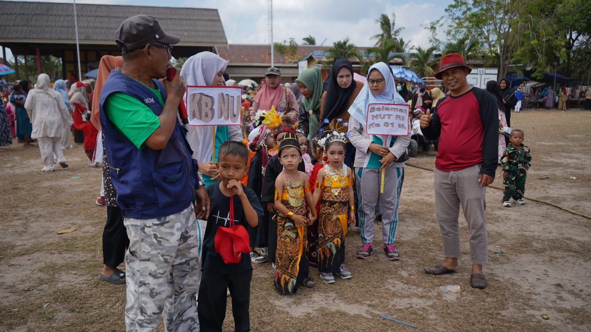
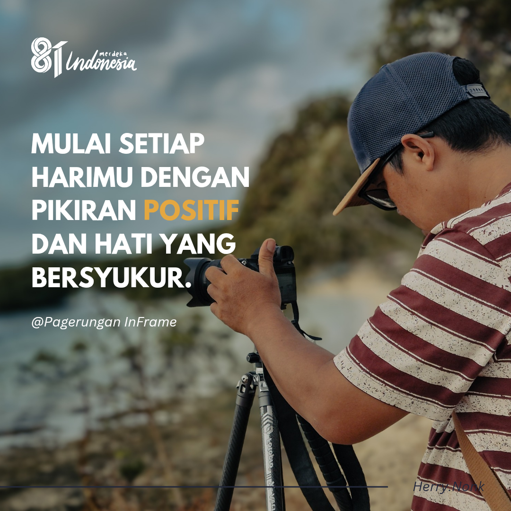
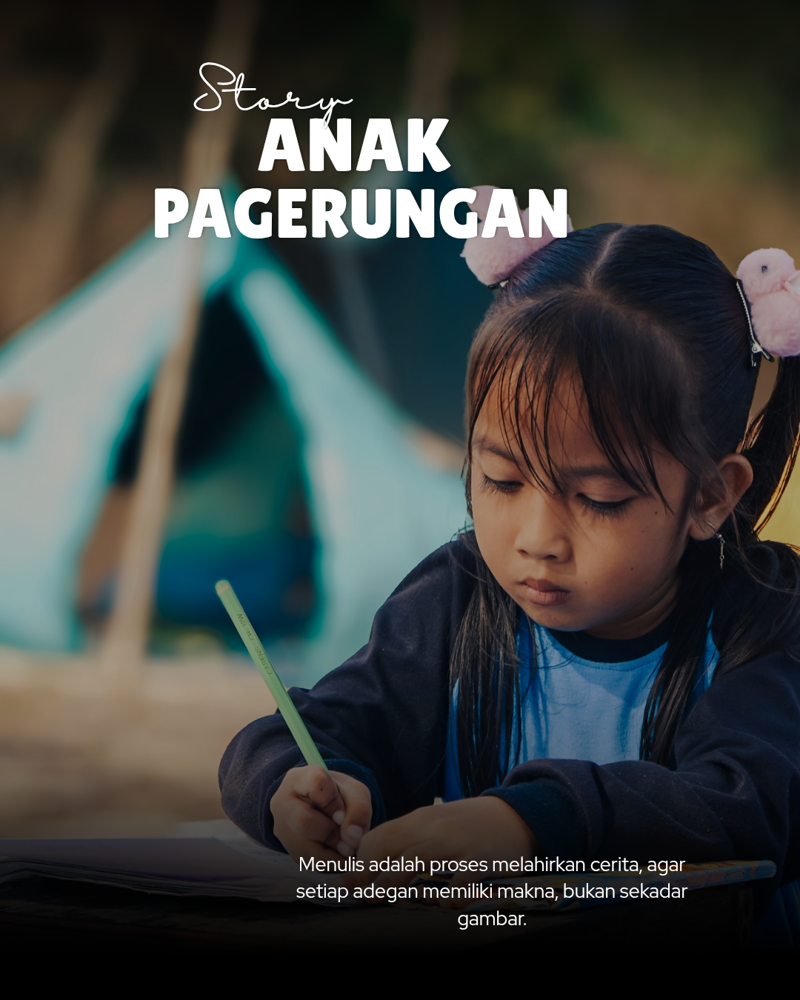
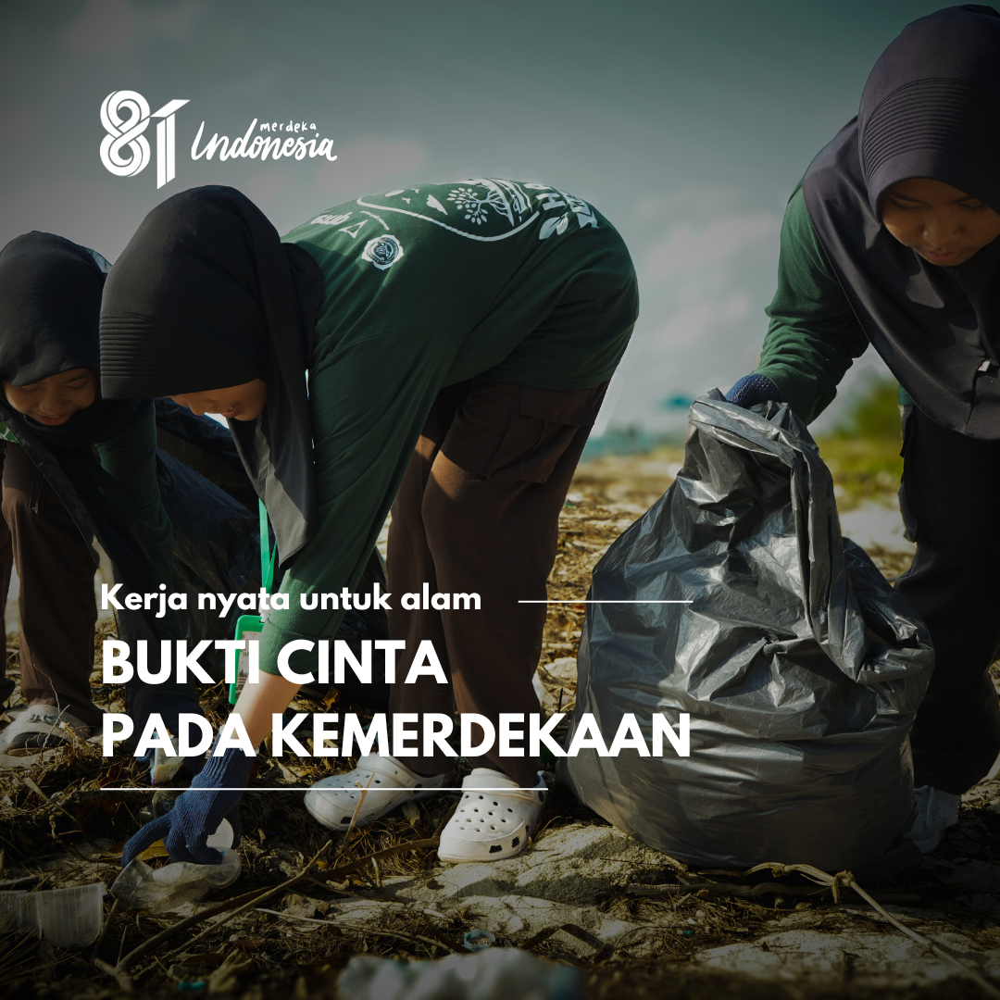

Tentang Kami
Pagerungan InFrame adalah media digital yang mendokumentasikan keindahan alam, budaya, dan kehidupan masyarakat Pulau Pagerungan Besar.
Sekretaris Desa Mursalin, S.Th.I Secara Resmi Melepas Pemberangkatan Karnaval Pagerungan Besar

PAGERUNGAN BESAR – Suasana penuh kemeriahan dan antusiasme warga mewarnai pelepasan peserta Karnaval Pagerungan Besar. Kegiatan kemerdekaan ini secara resmi dilepas langsung oleh Sekretaris Desa Pagerungan Besar, Mursalin, S.Th.I.
Perlu diketahui, karnaval ini tidak dilombakan, melainkan murni sebagai bentuk partisipasi aktif dari semua lembaga yang ada di Pagerungan Besar—mulai dari tingkat KB, TK hingga SMA/MA—demi meramaikan Desa Pagerungan Besar. Antusiasme dari para peserta maupun masyarakat yang hadir sungguh sangat luar biasa.
Ajang karnaval ini menampilkan beragam kostum adat, kreasi kebudayaan lokal, hingga beragam miniatur seni yang menyusuri rute utama Desa Pagerungan Besar dengan penuh semangat gotong royong dan kebersamaan.
Camat Sapeken dan Kades Pagerungan Besar Serahkan Hadiah Pemenang Lomba Perahu Pakur

SAPEKEN – Momen penuh kemeriahan mewarnai panggung penutupan Lomba Perahu Pakur (Tiga Roda) di Desa Pagerungan Besar, Kecamatan Sapeken. Penyerahan hadiah secara simbolis diserahkan langsung oleh Kepala Desa Pagerungan Besar bersama Camat Sapeken di atas panggung utama pada Rabu, 19 Agustus 2026.
Rincian Hadiah Resmi Pemenang:
- Juara I: Uang Tunai Rp8.000.000 + Sepeda Listrik
- Juara II: Uang Tunai Rp5.000.000 + Sepeda Pancal
- Juara III: Uang Tunai Rp3.000.000 + Kompor Gas
- Juara Harapan I: Uang Tunai Rp2.000.000
- Juara Harapan II: Uang Tunai Rp1.500.000
- Juara Harapan III: Uang Tunai Rp1.000.000
Lomba Perahu Pakur ini diselenggarakan dalam rangka memeriahkan HUT RI ke-81 sekaligus masuk dalam Kalender Event Kabupaten Sumenep Tahun 2026.
Galeri Karya


